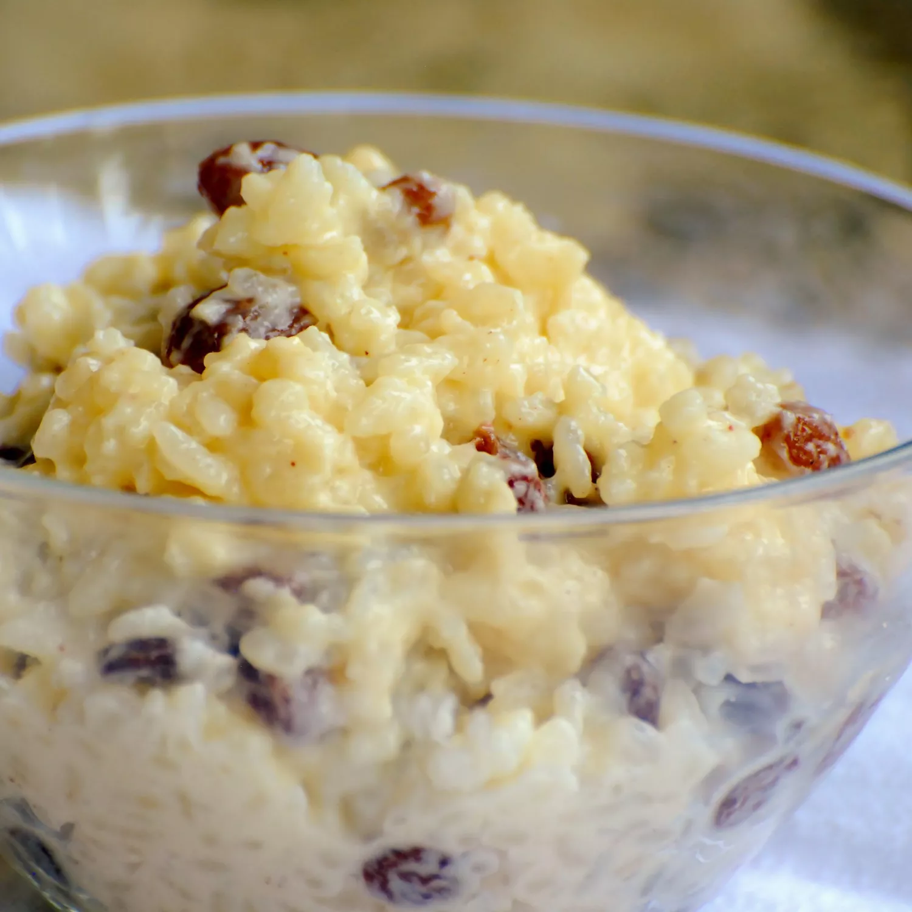

Creamy rice pudding

Description
This is a sweet and creamy rice that can be easily made with simple ingredients. Feel free to add other ingredients you think will be good on it!
Ingredients
- 3/4 cup uncooked rice
- 1 beaten egg
- 1/4 teaspoon of salt
- 1/3 cup of sugar
- 2/3 cup of golden raisins
- 1 tablespoon of butter
- 1/2 teaspoon of vanilla extract
- 2 cups of milk divided
Steps
- Pour water into a saucepan and boil over medium heat. Stir in rice Reduce heat to low, cover, and simmer until rice is tender and liquid has been absorb
for about 20 minutes.
- Combine the cook rice, 1 1/2 cups of milk, sugar, and salt in a clean saucepan. Cook over medium heat while stirring often until thick and creamy for
about 15 minutes.
- Stir in the remaining 1/2 cup of milk, beaten egg, and raisins. Cook for 2 minutes or more, stirring constantly. Remove from heat and stir in butter and vanilla
until combined.
- Serve warm and enjoy!
Source
Creamy rice pudding main source